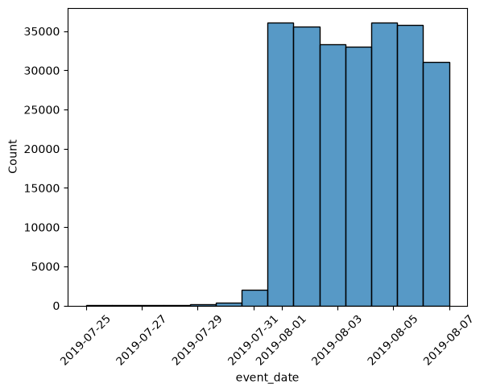
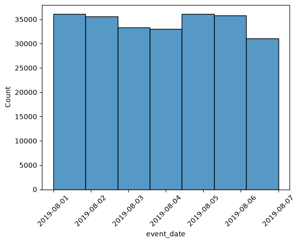
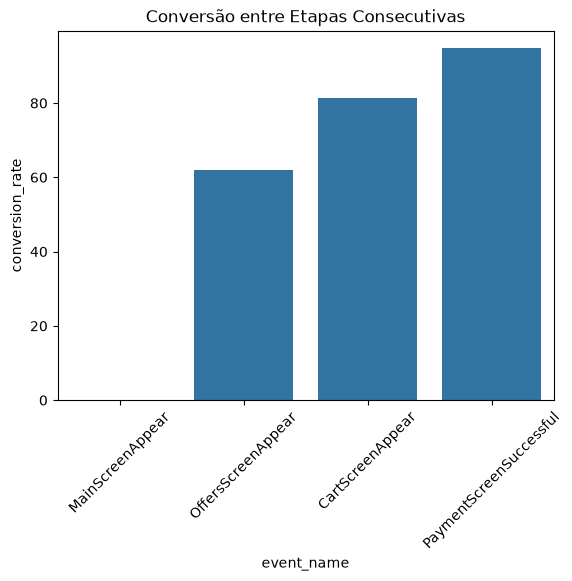

[[TripleTen - DA]]
Este projeto analisa os logs de uso do aplicativo de uma startup de venda de produtos alimentícios, com dois objetivos principais:
O documento está organizado em três grandes blocos: preparação e validação dos dados, análise do funil de eventos e, por fim, os testes estatísticos de hipótese que sustentam a decisão sobre a troca de fonte.
Cada linha do registro (também referido como log) é uma ação do usuário ou um evento.
EventName — nome do eventoDeviceIDHash — identificador de usuário exclusivoEventTimestamp — hora do eventoExpId — número do experimento: 246 e 247 são os grupos
de controle, 248 é o grupo de testeimport pandas as pd
import matplotlib.pyplot as plt
import seaborn as sns
import plotly.express as px
import plotly.io as pio
from statsmodels.stats.proportion import proportions_ztest## Importando e Abrindo DataSet
df_logs = pd.read_csv('/home/alexandre/Projetos/Estudos/Tripleten/sprint-11/logs_exp_us.csv', sep=('\t'))
df_logs.sample(5)| EventName | DeviceIDHash | EventTimestamp | ExpId | |
|---|---|---|---|---|
| 108722 | OffersScreenAppear | 393496016969278608 | 1564888843 | 246 |
| 46754 | MainScreenAppear | 4148267947677649217 | 1564732450 | 248 |
| 205951 | MainScreenAppear | 2549454884989911600 | 1565112460 | 246 |
| 65833 | MainScreenAppear | 7233844817118113370 | 1564763547 | 247 |
| 9654 | OffersScreenAppear | 3366545372369388717 | 1564646938 | 247 |
df_logs.info()<class 'pandas.DataFrame'>
RangeIndex: 244126 entries, 0 to 244125
Data columns (total 4 columns):
# Column Non-Null Count Dtype
--- ------ -------------- -----
0 EventName 244126 non-null str
1 DeviceIDHash 244126 non-null int64
2 EventTimestamp 244126 non-null int64
3 ExpId 244126 non-null int64
dtypes: int64(3), str(1)
memory usage: 7.5 MBdf_logs['EventName'].unique()<StringArray>
[ 'MainScreenAppear', 'PaymentScreenSuccessful',
'CartScreenAppear', 'OffersScreenAppear',
'Tutorial']
Length: 5, dtype: strapós analise foram identificados alguns pontos que deverão ser
corrigidos ou apenas alterados para melhor interpretação, sendo
eles:
1. Alteração dos nomes das colunas 2. Tipagem dos dados das colunas
EventTimestamp, ExpId e
DeviceIDHash
# alterando padrão dos nomes das colunas
df_logs.columnsIndex(['EventName', 'DeviceIDHash', 'EventTimestamp', 'ExpId'], dtype='str')df_logs.columns = df_logs.columns.str.lower()
df_logs.info()<class 'pandas.DataFrame'>
RangeIndex: 244126 entries, 0 to 244125
Data columns (total 4 columns):
# Column Non-Null Count Dtype
--- ------ -------------- -----
0 eventname 244126 non-null str
1 deviceidhash 244126 non-null int64
2 eventtimestamp 244126 non-null int64
3 expid 244126 non-null int64
dtypes: int64(3), str(1)
memory usage: 7.5 MBdf_logs = df_logs.rename(columns={
'eventname':'event_name',
'deviceidhash':'device_id_hash',
'eventtimestamp':'event_timestamp',
'expid':'exp_id'
})
df_logs.head(2)| event_name | device_id_hash | event_timestamp | exp_id | |
|---|---|---|---|---|
| 0 | MainScreenAppear | 4575588528974610257 | 1564029816 | 246 |
| 1 | MainScreenAppear | 7416695313311560658 | 1564053102 | 246 |
## Corrigindo Tipagem das Colunas
# Convertendo o timestamp numérico para uma data legível
df_logs['event_timestamp'] = pd.to_datetime(df_logs['event_timestamp'], unit='s')
df_logs.head(2)| event_name | device_id_hash | event_timestamp | exp_id | |
|---|---|---|---|---|
| 0 | MainScreenAppear | 4575588528974610257 | 2019-07-25 04:43:36 | 246 |
| 1 | MainScreenAppear | 7416695313311560658 | 2019-07-25 11:11:42 | 246 |
# alterando dados da coluna exp_id para facilitar leituras
""" ExpId — número do experimento: 246 e 247 são os grupos de controle, 248 é o grupo de teste """
df_logs['exp_id'] = df_logs['exp_id'].replace({
246:'A1',
247:'A2',
248:'B'
})
# Corriginfo tipagem dos dados de exp_id
df_logs['exp_id'] = df_logs['exp_id'].astype('category')
df_logs.info()<class 'pandas.DataFrame'>
RangeIndex: 244126 entries, 0 to 244125
Data columns (total 4 columns):
# Column Non-Null Count Dtype
--- ------ -------------- -----
0 event_name 244126 non-null str
1 device_id_hash 244126 non-null int64
2 event_timestamp 244126 non-null datetime64[s]
3 exp_id 244126 non-null category
dtypes: category(1), datetime64[s](1), int64(1), str(1)
memory usage: 5.8 MBdf_logs['exp_id'].unique()['A1', 'B', 'A2']
Categories (3, str): ['A1', 'A2', 'B']# como se trata de um identificado, e não sofrerá calculos, alterei a tipagem para object
df_logs['device_id_hash'] = df_logs['device_id_hash'].astype('object')
df_logs.info()<class 'pandas.DataFrame'>
RangeIndex: 244126 entries, 0 to 244125
Data columns (total 4 columns):
# Column Non-Null Count Dtype
--- ------ -------------- -----
0 event_name 244126 non-null str
1 device_id_hash 244126 non-null object
2 event_timestamp 244126 non-null datetime64[s]
3 exp_id 244126 non-null category
dtypes: category(1), datetime64[s](1), object(1), str(1)
memory usage: 5.8+ MBdf_logs['event_date'] = df_logs['event_timestamp'].dt.date
df_logs['event_date'] = pd.to_datetime(df_logs['event_date'])
df_logs.sample(2)| event_name | device_id_hash | event_timestamp | exp_id | event_date | |
|---|---|---|---|---|---|
| 185555 | MainScreenAppear | 4371853212951412726 | 2019-08-06 08:19:11 | B | 2019-08-06 |
| 229006 | MainScreenAppear | 2581922244654274386 | 2019-08-07 13:16:52 | A2 | 2019-08-07 |
df_logs.info()<class 'pandas.DataFrame'>
RangeIndex: 244126 entries, 0 to 244125
Data columns (total 5 columns):
# Column Non-Null Count Dtype
--- ------ -------------- -----
0 event_name 244126 non-null str
1 device_id_hash 244126 non-null object
2 event_timestamp 244126 non-null datetime64[s]
3 exp_id 244126 non-null category
4 event_date 244126 non-null datetime64[s]
dtypes: category(1), datetime64[s](2), object(1), str(1)
memory usage: 7.7+ MBdf_logs.isnull().sum()event_name 0
device_id_hash 0
event_timestamp 0
exp_id 0
event_date 0
dtype: int64df_logs.duplicated().sum()np.int64(413)# verificando a proporção de duplicatas no dataframe
percent = (df_logs.duplicated().sum()/df_logs.shape[0])*100
print(f"A porcentagem de duplicatas no DataFrame é de {percent:.2f}%")A porcentagem de duplicatas no DataFrame é de 0.17%df_logs = df_logs.drop_duplicates().reset_index(drop=True)
df_logs| event_name | device_id_hash | event_timestamp | exp_id | event_date | |
|---|---|---|---|---|---|
| 0 | MainScreenAppear | 4575588528974610257 | 2019-07-25 04:43:36 | A1 | 2019-07-25 |
| 1 | MainScreenAppear | 7416695313311560658 | 2019-07-25 11:11:42 | A1 | 2019-07-25 |
| 2 | PaymentScreenSuccessful | 3518123091307005509 | 2019-07-25 11:28:47 | B | 2019-07-25 |
| 3 | CartScreenAppear | 3518123091307005509 | 2019-07-25 11:28:47 | B | 2019-07-25 |
| 4 | PaymentScreenSuccessful | 6217807653094995999 | 2019-07-25 11:48:42 | B | 2019-07-25 |
| … | … | … | … | … | … |
| 243708 | MainScreenAppear | 4599628364049201812 | 2019-08-07 21:12:25 | A2 | 2019-08-07 |
| 243709 | MainScreenAppear | 5849806612437486590 | 2019-08-07 21:13:59 | A1 | 2019-08-07 |
| 243710 | MainScreenAppear | 5746969938801999050 | 2019-08-07 21:14:43 | A1 | 2019-08-07 |
| 243711 | MainScreenAppear | 5746969938801999050 | 2019-08-07 21:14:58 | A1 | 2019-08-07 |
| 243712 | OffersScreenAppear | 5746969938801999050 | 2019-08-07 21:15:17 | A1 | 2019-08-07 |
243713 rows × 5 columns
df_logs.info()<class 'pandas.DataFrame'>
RangeIndex: 243713 entries, 0 to 243712
Data columns (total 5 columns):
# Column Non-Null Count Dtype
--- ------ -------------- -----
0 event_name 243713 non-null str
1 device_id_hash 243713 non-null object
2 event_timestamp 243713 non-null datetime64[s]
3 exp_id 243713 non-null category
4 event_date 243713 non-null datetime64[s]
dtypes: category(1), datetime64[s](2), object(1), str(1)
memory usage: 7.7+ MB# Respondendo Principais Perguntas
## Quantos eventos ficam nos registros?
# contabilizando número de eventos registrados e número tipos de eventos
event_count = df_logs['event_name'].count()
print(f"O DataFrame contém {event_count} registros de eventos sendo {df_logs['event_name'].nunique()} tipos diferentes de evento")O DataFrame contém 243713 registros de eventos sendo 5 tipos diferentes de evento## Quantos usuários ficam nos registros?
user_count = df_logs['device_id_hash'].nunique()
print(f"O número de usuários únicos registrados nos dados são de {user_count}")O número de usuários únicos registrados nos dados são de 7551## Qual é o número médio de eventos por usuário?
mean_event_user = event_count / user_count
print(f"O DataFrame contém um número médio de {mean_event_user:.2f} eventos por usuário")O DataFrame contém um número médio de 32.28 eventos por usuário## Qual é o período de tempo que os dados cobrem?
max_time = df_logs['event_timestamp'].max()
min_time = df_logs['event_timestamp'].min()
print(f"O dados cobrem um período de tempo a partir de {min_time} até {max_time}")O dados cobrem um período de tempo a partir de 2019-07-25 04:43:36 até 2019-08-07 21:15:17sns.histplot(data=df_logs, x='event_date', bins=14)
plt.xticks(rotation=45)
plt.show()
df_logs['event_date'].value_counts().sort_index()event_date
2019-07-25 9
2019-07-26 31
2019-07-27 55
2019-07-28 105
2019-07-29 184
2019-07-30 412
2019-07-31 2030
2019-08-01 36141
2019-08-02 35554
2019-08-03 33282
2019-08-04 32968
2019-08-05 36058
2019-08-06 35788
2019-08-07 31096
Name: count, dtype: int64Nota-se que o volume de logs entre 25/07 e 31/07/2019 é muito inferior (variando de 9 a 2030 registros por dia) em comparação ao volume estável observado a partir de 01/08/2019 (entre ~31 mil e 36 mil registros por dia). Essa discrepância brusca indica que a coleta de dados só se tornou completa a partir dessa data, portanto os dados anteriores a 01/08/2019 serão ignorados por representarem uma amostra incompleta.
df_logs_bc = df_logs # salvando uma versão sem corte
df_logs = df_logs[df_logs['event_date'] > '2019-07-31']
sns.histplot(data=df_logs, x='event_date', bins=7)
plt.xticks(rotation=45)
plt.show()
max_time = df_logs['event_timestamp'].max()
min_time = df_logs['event_timestamp'].min()
print(f"O dados, a partir de agora, cobrem um período de tempo a partir de {min_time} até {max_time}")O dados, a partir de agora, cobrem um período de tempo a partir de 2019-08-01 00:07:28 até 2019-08-07 21:15:17# selecionando período anterior a 01/08/2019
before_cut_count = df_logs_bc[df_logs_bc['event_date'] < '2019-08-01']
# Calculando porcentagem de dados perdidos e porcentagem de usuários afetados
percent_log = (before_cut_count.shape[0] / df_logs_bc.shape[0]) * 100
percent_id = (before_cut_count['device_id_hash'].nunique() / df_logs_bc['device_id_hash'].nunique()) * 100
# calculando quantidade de usuários perdidos
usuarios_antes = set(before_cut_count['device_id_hash'].unique())
usuarios_depois = set(df_logs['device_id_hash'].unique())
usuarios_totalmente_perdidos = usuarios_antes - usuarios_depois
print(f"Foi perdido {before_cut_count.shape[0]} logs, representando {percent_log:.2f}% dos logs totais, logs esses vindos de {percent_id:.2f}% dos usuários totais")
print(f"Usuários totalmente perdidos: {len(usuarios_totalmente_perdidos)}")
print(f"Isso representa {(len(usuarios_totalmente_perdidos)/before_cut_count['device_id_hash'].nunique())*100:.2f}% dos {before_cut_count['device_id_hash'].nunique()} usuários que tiveram log removido")Foi perdido 2826 logs, representando 1.16% dos logs totais, logs esses vindos de 19.22% dos usuários totais
Usuários totalmente perdidos: 17
Isso representa 1.17% dos 1451 usuários que tiveram log removidoApós o corte no período desejado, foram preservados 98,84% dos logs originais. 19,22% dos usuários tiveram algum log removido do dataframe, porém, desse grupo, apenas 17 usuários (1,17%) foram de fato removidos por completo — ou seja, não tinham nenhum outro registro após o corte. Como os logs removidos representam apenas 1,16% do total e a perda real de usuários foi de apenas 17 (sobre uma base total muito maior), podemos afirmar que o corte de data não gerou perda estatisticamente relevante, nem de dados, nem de usuários.
# verificanto integridade de usuários por grupo
user_per_group = df_logs.groupby('exp_id')['device_id_hash'].nunique()
print(user_per_group)exp_id
A1 2484
A2 2513
B 2537
Name: device_id_hash, dtype: int64Após contabilização de usuários por grupo, confirma-se que os três grupos experimentais (A1, A2, B) estão presentes no dataframe pós-corte, com 2484, 2513 e 2537 usuários respectivamente, o que se mostra equilibrado para o teste A/A/B.
# Contabilizando e ordenando a frequência de eventos de forma descrecente
df_logs['event_name'].value_counts(ascending=False)event_name
MainScreenAppear 117328
OffersScreenAppear 46333
CartScreenAppear 42303
PaymentScreenSuccessful 33918
Tutorial 1005
Name: count, dtype: int64## Número de usuários por evento
df_logs.groupby('event_name')['device_id_hash'].nunique().sort_values()event_name
Tutorial 840
PaymentScreenSuccessful 3539
CartScreenAppear 3734
OffersScreenAppear 4593
MainScreenAppear 7419
Name: device_id_hash, dtype: int64O evento Tutorial tem o menor número de logs entre todos
(840), muito abaixo até da etapa final
PaymentScreenSuccessful (3539). Como numa etapa obrigatória
do funil o número de ocorrências não pode ser menor que o das etapas
seguintes, essa contagem baixa indica que Tutorial não é
uma etapa obrigatória em nenhum ponto da sequência, é um evento
opcional, visitado apenas por parte dos usuários, e por isso será
excluído do cálculo do funil.
pio.renderers.default = "iframe"# criadno lista de eventos em ordem decrescente
events_funnel = ['MainScreenAppear','OffersScreenAppear','CartScreenAppear','PaymentScreenSuccessful']# agrupando usuários únicos por evento e ordenando-os
users_per_event = df_logs[df_logs['event_name'].isin(events_funnel)].groupby('event_name')['device_id_hash'].nunique()
users_per_event = users_per_event.reindex(events_funnel).reset_index()
users_per_event.columns = ['event_name','unique_users']
users_per_event| event_name | unique_users | |
|---|---|---|
| 0 | MainScreenAppear | 7419 |
| 1 | OffersScreenAppear | 4593 |
| 2 | CartScreenAppear | 3734 |
| 3 | PaymentScreenSuccessful | 3539 |
fig = px.funnel(
users_per_event,
x='unique_users',
y='event_name',
title='Funil de Conversão de Usuários (números absolutos)'
)fig.show()# criado base para calculo de porccentagem
base = df_logs['device_id_hash'].nunique()
users_per_event['percent_users'] = (users_per_event['unique_users']/base)*100
users_per_event| event_name | unique_users | percent_users | |
|---|---|---|---|
| 0 | MainScreenAppear | 7419 | 98.473586 |
| 1 | OffersScreenAppear | 4593 | 60.963632 |
| 2 | CartScreenAppear | 3734 | 49.561986 |
| 3 | PaymentScreenSuccessful | 3539 | 46.973719 |
fig = px.funnel(
users_per_event,
x='percent_users',
y='event_name',
title='Funil de Conversão de Usuários (% sobre o total)'
)fig.show()Os gráficos mostram uma queda progressiva e esperada ao longo do funil: de 7419 usuários (98,47% da base) que visualizam a tela principal, o número cai para 4593 (60,96%) na tela de ofertas, 3734 (49,56%) no carrinho, e 3539 (46,97%) completam o pagamento. A maior queda em termos de percentual sobre o total ocorre entre MainScreenAppear e OffersScreenAppear, uma redução de aproximadamente 37,5 pontos percentuais.
## Proporção de conversão entre etapas
users_per_event['previous_step_users'] = users_per_event['unique_users'].shift(1)
users_per_event['conversion_rate'] = (users_per_event['unique_users'] / users_per_event['previous_step_users']) * 100
users_per_event| event_name | unique_users | percent_users | previous_step_users | conversion_rate | |
|---|---|---|---|---|---|
| 0 | MainScreenAppear | 7419 | 98.473586 | NaN | NaN |
| 1 | OffersScreenAppear | 4593 | 60.963632 | 7419.0 | 61.908613 |
| 2 | CartScreenAppear | 3734 | 49.561986 | 4593.0 | 81.297627 |
| 3 | PaymentScreenSuccessful | 3539 | 46.973719 | 3734.0 | 94.777718 |
# como não se trata de uma apresentação, determinou-se a preservação da linha do evento "MainScreenAppear" mesmo que o valor de seja nulo.
sns.barplot(data=users_per_event, x='event_name',y='conversion_rate')
plt.title('Conversão entre Etapas Consecutivas')
plt.xticks(rotation=45)
plt.show()
A análise da conversão entre etapas consecutivas indica que a maior perda de usuários ocorre na transição da tela principal (MainScreenAppear) para a tela de ofertas (OffersScreenAppear), onde apenas 61,9% dos usuários avançam. A partir dessa etapa, a retenção aumenta significativamente, registrando 81,3% de conversão para o carrinho (CartScreenAppear) e 94,8% para a finalização do pagamento (PaymentScreenSuccessful). No balanço geral do funil, 46,9% dos usuários que acessaram a plataforma concluíram a compra.
# selecionando usuários que realizaram todos as etapas
main_users = users_per_event.loc[users_per_event['event_name'] == 'MainScreenAppear', 'unique_users'].values[0]
payment_users = users_per_event.loc[users_per_event['event_name'] == 'PaymentScreenSuccessful', 'unique_users'].values[0]
conversion_full = (payment_users / main_users) * 100
print(f"Conversão ponta a ponta: {conversion_full:.2f}%")
print(f"Total de usuários no dataset: {base}")
print(f"Usuários que passaram por MainScreenAppear: {main_users}")Conversão ponta a ponta: 47.70%
Total de usuários no dataset: 7534
Usuários que passaram por MainScreenAppear: 7419## Identificando o Evento com maior número de Logs e realizando testes
#agrupando DataFrame por evento e por grupo de teste, e contabilizando número de usuários únicos por grupo
event_unique_count = df_logs.groupby(['event_name','exp_id'])['device_id_hash'].nunique().reset_index().sort_values(by='device_id_hash',ascending=False)
event_unique_count| event_name | exp_id | device_id_hash | |
|---|---|---|---|
| 5 | MainScreenAppear | B | 2493 |
| 4 | MainScreenAppear | A2 | 2476 |
| 3 | MainScreenAppear | A1 | 2450 |
| 6 | OffersScreenAppear | A1 | 1542 |
| 8 | OffersScreenAppear | B | 1531 |
| 7 | OffersScreenAppear | A2 | 1520 |
| 0 | CartScreenAppear | A1 | 1266 |
| 1 | CartScreenAppear | A2 | 1238 |
| 2 | CartScreenAppear | B | 1230 |
| 9 | PaymentScreenSuccessful | A1 | 1200 |
| 11 | PaymentScreenSuccessful | B | 1181 |
| 10 | PaymentScreenSuccessful | A2 | 1158 |
| 13 | Tutorial | A2 | 283 |
| 14 | Tutorial | B | 279 |
| 12 | Tutorial | A1 | 278 |
# para saber quantos usuários há em cada grupo, foi utilizado a variável 'user_per_group' da célula 45
user_per_groupexp_id
A1 2484
A2 2513
B 2537
Name: device_id_hash, dtype: int64Observa-se que o evento com maior número de eventos é
MainScreenAppear
### Realizando Testes de MainScreenAppear
event_unique_count[event_unique_count['event_name']=='MainScreenAppear']| event_name | exp_id | device_id_hash | |
|---|---|---|---|
| 5 | MainScreenAppear | B | 2493 |
| 4 | MainScreenAppear | A2 | 2476 |
| 3 | MainScreenAppear | A1 | 2450 |
# realizando teste estatístico
count = [2450,2476]
nobs = [2484,2513]
stat, p_value = proportions_ztest(count, nobs)
print(f"p_valor = {p_value:.2f}")
print(f"stat = {stat:.2f}")p_valor = 0.76
stat = 0.31# foi adotado o valor de 1% para alpha
if p_value < 0.01:
print("Rejeitamos a Hipotese Nula: há diferença significativa entrea as duas proporções")
else:
print("Não Rejeitamos a Hipótese Nula: não há diferença significativa entre as duas proporções")
print("-"*80)
# realizando teste para alpha ajustado
if p_value < (0.01/12):
print("Rejeitamos a Hipotese Nula: há diferença significativa entrea as duas proporções")
else:
print("Não Rejeitamos a Hipótese Nula: não há diferença significativa entre as duas proporções")Não Rejeitamos a Hipótese Nula: não há diferença significativa entre as duas proporções
--------------------------------------------------------------------------------
Não Rejeitamos a Hipótese Nula: não há diferença significativa entre as duas proporçõesPara o evento MainScreenAppear, o teste A/A entre os grupos de controle A1 e A2 resultou em p-valor de 0.76, muito acima tanto do alpha padrão (1%) quanto do alpha ajustado para múltiplos testes (≈0,083%). Não rejeitamos a hipótese nula em nenhum dos dois critérios, não há evidência de diferença estatisticamente significativa entre os dois grupos de controle para esse evento, o que é o comportamento esperado e reforça a confiabilidade da divisão aleatória dos usuários.
# realizando teste estatístico
count = [2450,2493]
nobs = [2484,2537]
stat, p_value = proportions_ztest(count,nobs)
print(f"p_valor = {p_value:.2f}")
print(f"stat = {stat:.2f}")p_valor = 0.29
stat = 1.05# foi adotado o valor de 1% para alpha
if p_value < 0.01:
print("Rejeitamos a Hipotese Nula: há diferença significativa entrea as duas proporções")
else:
print("Não Rejeitamos a Hipótese Nula: não há diferença significativa entre as duas proporções")
print("-"*80)
# realizando teste para alpha ajustado
if p_value < (0.01/12):
print("Rejeitamos a Hipotese Nula: há diferença significativa entrea as duas proporções")
else:
print("Não Rejeitamos a Hipótese Nula: não há diferença significativa entre as duas proporções")Não Rejeitamos a Hipótese Nula: não há diferença significativa entre as duas proporções
--------------------------------------------------------------------------------
Não Rejeitamos a Hipótese Nula: não há diferença significativa entre as duas proporçõesPara o teste A1/B entre o grupo de controle A1 e o grupo com a fonte alterada, obteve-se um p-valor de 0,29, acima tanto do alpha padrão (1%) quanto do alpha ajustado (≈0,083%). Não rejeitamos a hipótese nula em nenhum dos dois critérios , não há diferença estatística entre os dois grupos para este evento.
# realizando teste estatístico
count = [2476, 2493]
nobs = [2513,2537]
stat, p_value = proportions_ztest(count,nobs)
print(f"p_valor = {p_value:.2f}")
print(f"stat = {stat:.2f}")p_valor = 0.46
stat = 0.74# foi adotado o valor de 1% para alpha
if p_value < 0.01:
print("Rejeitamos a Hipotese Nula: há diferença significativa entrea as duas proporções")
else:
print("Não Rejeitamos a Hipótese Nula: não há diferença significativa entre as duas proporções")
print("-"*80)
# realizando teste para alpha ajustado
if p_value < (0.01/12):
print("Rejeitamos a Hipotese Nula: há diferença significativa entrea as duas proporções")
else:
print("Não Rejeitamos a Hipótese Nula: não há diferença significativa entre as duas proporções")Não Rejeitamos a Hipótese Nula: não há diferença significativa entre as duas proporções
--------------------------------------------------------------------------------
Não Rejeitamos a Hipótese Nula: não há diferença significativa entre as duas proporçõesAssim como nos testes anteriores, não obtivemos diferença estatisticamente significativa: o p-valor de 0,46 ficou acima tanto do alpha padrão (1%) quanto do alpha ajustado (≈0,083%). Não rejeitamos a hipótese nula em nenhum dos dois critérios para este evento.
## Realizando Teste Dos Demais Eventos
# criando função para facilitar testes
def proportion_test(nome_evento, contagem_grupo1, total_grupo1, contagem_grupo2, total_grupo2, alpha_padrao=0.01, alpha_ajustado=0.01/12):
""" Esta função busca facilitar os testes estatístico com proportions_ztest e obtendo resultados para o valor
de alpha padrão e ajustado ( alpha * Numero de testes ) para mitigar as chances de um falso positivo"""
count = [contagem_grupo1, contagem_grupo2]
nobs = [total_grupo1, total_grupo2]
stat, p_value = proportions_ztest(count, nobs)
print(nome_evento)
print()
print(f"p_value = {p_value:.4f}")
print(f"stat = {stat:.2f}")
print()
for label, alpha in [("Alpha padrão (0.01)", alpha_padrao), ("Alpha ajustado", alpha_ajustado)]:
if p_value < alpha:
print(f"[{label}] Rejeitamos a Hipótese Nula: há diferença significativa")
print()
else:
print(f"[{label}] Não rejeitamos a Hipótese Nula: não há diferença significativa")
print()
print("-"*80)
# testando função com teste já realizando anteriormente
proportion_test("MainScreenAppear (A2 x B) - teste de validação da função", 2476,2513,2493,2537)MainScreenAppear (A2 x B) - teste de validação da função
p_value = 0.4587
stat = 0.74
[Alpha padrão (0.01)] Não rejeitamos a Hipótese Nula: não há diferença significativa
[Alpha ajustado] Não rejeitamos a Hipótese Nula: não há diferença significativa
--------------------------------------------------------------------------------# coletando valores de logs de cada evento
event_unique_count
# total de cada grupo
# A1 2484
# A2 2513
# B 2537| event_name | exp_id | device_id_hash | |
|---|---|---|---|
| 5 | MainScreenAppear | B | 2493 |
| 4 | MainScreenAppear | A2 | 2476 |
| 3 | MainScreenAppear | A1 | 2450 |
| 6 | OffersScreenAppear | A1 | 1542 |
| 8 | OffersScreenAppear | B | 1531 |
| 7 | OffersScreenAppear | A2 | 1520 |
| 0 | CartScreenAppear | A1 | 1266 |
| 1 | CartScreenAppear | A2 | 1238 |
| 2 | CartScreenAppear | B | 1230 |
| 9 | PaymentScreenSuccessful | A1 | 1200 |
| 11 | PaymentScreenSuccessful | B | 1181 |
| 10 | PaymentScreenSuccessful | A2 | 1158 |
| 13 | Tutorial | A2 | 283 |
| 14 | Tutorial | B | 279 |
| 12 | Tutorial | A1 | 278 |
### Realizando testes para OffersScreenAppear
OffersScreenAppear A1 1542
OffersScreenAppear A2 1520
OffersScreenAppear B 1531
A1 2484
A2 2513
B 2537
# realizando teste para grupos de controles (A1 x A2) com alpha padrão e ajustado
proportion_test("OffersScreenAppear ( A1 X A2 )",1542,2484,1520,2513)OffersScreenAppear ( A1 X A2 )
p_value = 0.2481
stat = 1.15
[Alpha padrão (0.01)] Não rejeitamos a Hipótese Nula: não há diferença significativa
[Alpha ajustado] Não rejeitamos a Hipótese Nula: não há diferença significativa
--------------------------------------------------------------------------------# realizando teste para grupos os grupos A1 x B com alpha padrão e ajustado
proportion_test("OffersScreenAppear ( A1 X B )",1542,2484,1531,2537)OffersScreenAppear ( A1 X B )
p_value = 0.2084
stat = 1.26
[Alpha padrão (0.01)] Não rejeitamos a Hipótese Nula: não há diferença significativa
[Alpha ajustado] Não rejeitamos a Hipótese Nula: não há diferença significativa
--------------------------------------------------------------------------------# realizando teste para grupos os grupos A2 x B com alpha padrão e ajustado
proportion_test("OffersScreenAppear ( A2 X B )",1520,2513,1531,2537)OffersScreenAppear ( A2 X B )
p_value = 0.9198
stat = 0.10
[Alpha padrão (0.01)] Não rejeitamos a Hipótese Nula: não há diferença significativa
[Alpha ajustado] Não rejeitamos a Hipótese Nula: não há diferença significativa
--------------------------------------------------------------------------------Para o evento OffersScreenAppear, nenhuma das três comparações (A1 x A2, A1 x B, A2 x B) apresentou diferença estatisticamente significativa, mesmo considerando o alpha ajustado para múltiplos testes (0,00083). Os p-valores obtidos (0,2481, 0,2084 e 0,9198) ficaram bem acima desse limite, reforçando tanto a consistência entre os grupos de controle quanto a ausência de efeito perceptível da fonte nova sobre esse evento específico
### Realizando Testes para CartScreenAppear
0 CartScreenAppear A1 1266
1 CartScreenAppear A2 1238
2 CartScreenAppear B 1230
A1 2484
A2 2513
B 2537
# realizando teste para grupos de controles (A1 x A2) com alpha padrão e ajustado
proportion_test("CartScreenAppear ( A1 X A2 )",1266,2484,1238,2513)CartScreenAppear ( A1 X A2 )
p_value = 0.2288
stat = 1.20
[Alpha padrão (0.01)] Não rejeitamos a Hipótese Nula: não há diferença significativa
[Alpha ajustado] Não rejeitamos a Hipótese Nula: não há diferença significativa
--------------------------------------------------------------------------------# realizando teste para grupos os grupos A1 x B com alpha padrão e ajustado
proportion_test("CartScreenAppear ( A1 X B )",1266,2484,1230,2537)CartScreenAppear ( A1 X B )
p_value = 0.0784
stat = 1.76
[Alpha padrão (0.01)] Não rejeitamos a Hipótese Nula: não há diferença significativa
[Alpha ajustado] Não rejeitamos a Hipótese Nula: não há diferença significativa
--------------------------------------------------------------------------------# realizando teste para grupos os grupos A2 x B com alpha padrão e ajustado
proportion_test("CartScreenAppear ( A2 X B )",1238,2513,1230,2537)CartScreenAppear ( A2 X B )
p_value = 0.5786
stat = 0.56
[Alpha padrão (0.01)] Não rejeitamos a Hipótese Nula: não há diferença significativa
[Alpha ajustado] Não rejeitamos a Hipótese Nula: não há diferença significativa
--------------------------------------------------------------------------------Para o evento CartScreenAppear, nenhuma das três comparações apresentou diferença estatisticamente significativa. O p-valor mais próximo do limite foi o de A1 x B (0,0784), ainda assim, folgado o suficiente para não ser considerado significativo nem no alpha padrão (0,01) nem no ajustado (0,00083). Os resultados seguem reforçando a consistência entre os grupos de controle e a ausência de efeito da fonte nova sobre esse evento.
### Realizando Testes para PaymentScreenSuccessful
9 PaymentScreenSuccessful A1 1200
10 PaymentScreenSuccessful A2 1158
11 PaymentScreenSuccessful B 1181
A1 2484
A2 2513
B 2537
# realizando teste para grupos de controles (A1 x A2) com alpha padrão e ajustado
proportion_test("PaymentScreenSuccessful ( A1 X A2 )",1200,2484,1158,2513)PaymentScreenSuccessful ( A1 X A2 )
p_value = 0.1146
stat = 1.58
[Alpha padrão (0.01)] Não rejeitamos a Hipótese Nula: não há diferença significativa
[Alpha ajustado] Não rejeitamos a Hipótese Nula: não há diferença significativa
--------------------------------------------------------------------------------# realizando teste para grupos os grupos A1 x B com alpha padrão e ajustado
proportion_test("PaymentScreenSuccessful ( A1 X B )",1200,2484,1181,2537)PaymentScreenSuccessful ( A1 X B )
p_value = 0.2123
stat = 1.25
[Alpha padrão (0.01)] Não rejeitamos a Hipótese Nula: não há diferença significativa
[Alpha ajustado] Não rejeitamos a Hipótese Nula: não há diferença significativa
--------------------------------------------------------------------------------# realizando teste para grupos os grupos A2 x B com alpha padrão e ajustado
proportion_test("PaymentScreenSuccessful ( A2 X B )",1158,2513,1181,2537)PaymentScreenSuccessful ( A2 X B )
p_value = 0.7373
stat = -0.34
[Alpha padrão (0.01)] Não rejeitamos a Hipótese Nula: não há diferença significativa
[Alpha ajustado] Não rejeitamos a Hipótese Nula: não há diferença significativa
--------------------------------------------------------------------------------Para o evento PaymentScreenSuccessful, nenhuma das três comparações apresentou diferença estatisticamente significativa, mesmo com o alpha ajustado, os p-valores (0,1146, 0,2123 e 0,7373) ficaram bem acima do limite de 0,00083.
## Realizando Testes com Grupos de Controles Combinados
# ajustando função para testes combinados, alpha sendo alterado para 0.01/16 ao invés de 0.01/12.
# A decisão de ajustar a função apenas aqui foi pelo fato dos p_valuers anteriores serem sempre maiores que 0.01.
# Ou seja, não afetaria nenhuma conclusão tirada pelos resultados dos testes esatístiscos.
def proportion_test(nome_evento, contagem_grupo1, total_grupo1, contagem_grupo2, total_grupo2, alpha_padrao=0.01, alpha_ajustado=0.01/16):
""" Esta função busca facilitar os testes estatístico com proportions_ztest e obtendo resultados para o valor
de alpha padrão e ajustado ( alpha * Numero de testes ) para mitigar as chances de um falso positivo"""
count = [contagem_grupo1, contagem_grupo2]
nobs = [total_grupo1, total_grupo2]
stat, p_value = proportions_ztest(count, nobs)
print(nome_evento)
print()
print(f"p_value = {p_value:.4f}")
print(f"stat = {stat:.2f}")
print()
for label, alpha in [("Alpha padrão (0.01)", alpha_padrao), ("Alpha ajustado", alpha_ajustado)]:
if p_value < alpha:
print(f"[{label}] Rejeitamos a Hipótese Nula: há diferença significativa")
print()
else:
print(f"[{label}] Não rejeitamos a Hipótese Nula: não há diferença significativa")
print()
print("-"*80)
### Realizando Teste Combinado para
MainScreenAppear 5 MainScreenAppear B 2493
4 MainScreenAppear A2 2476
3 MainScreenAppear A1 2450
A1 2484
A2 2513
B 2537
count_a1a2 = 2476+2450
total_a1a2 = 2484+2513
proportion_test("MainScreenAppear (A combinados/B)", count_a1a2, total_a1a2, 2493,2537)MainScreenAppear (A combinados/B)
p_value = 0.2942
stat = 1.05
[Alpha padrão (0.01)] Não rejeitamos a Hipótese Nula: não há diferença significativa
[Alpha ajustado] Não rejeitamos a Hipótese Nula: não há diferença significativa
-------------------------------------------------------------------------------- ### Realizando Teste Combinado para
OffersScreenAppear OffersScreenAppear A1 1542
OffersScreenAppear A2 1520
OffersScreenAppear B 1531
A1 2484
A2 2513
B 2537
count_a1a2 = 1542+1520
proportion_test("OffersScreenAppear (A combinados/B)", count_a1a2, total_a1a2, 1531,2537)OffersScreenAppear (A combinados/B)
p_value = 0.4343
stat = 0.78
[Alpha padrão (0.01)] Não rejeitamos a Hipótese Nula: não há diferença significativa
[Alpha ajustado] Não rejeitamos a Hipótese Nula: não há diferença significativa
-------------------------------------------------------------------------------- ### Realizando Teste Combinado para
CartScreenAppear 0 CartScreenAppear A1 1266
1 CartScreenAppear A2 1238
2 CartScreenAppear B 1230
A1 2484
A2 2513
B 2537
count_a1a2 = 1266+1238
proportion_test("CartScreenAppear (A combinados/B)", count_a1a2, total_a1a2, 1230,2537)CartScreenAppear (A combinados/B)
p_value = 0.1818
stat = 1.34
[Alpha padrão (0.01)] Não rejeitamos a Hipótese Nula: não há diferença significativa
[Alpha ajustado] Não rejeitamos a Hipótese Nula: não há diferença significativa
-------------------------------------------------------------------------------- ### Realizando Teste Combinado para
PaymentScreenSuccessful 9 PaymentScreenSuccessful A1 1200
10 PaymentScreenSuccessful A2 1158
11 PaymentScreenSuccessful B 1181
A1 2484
A2 2513
B 2537
count_a1a2 = 1200+1158
proportion_test("PaymentScreenSuccessful (A combinados/B)", count_a1a2, total_a1a2, 1181,2537)PaymentScreenSuccessful (A combinados/B)
p_value = 0.6004
stat = 0.52
[Alpha padrão (0.01)] Não rejeitamos a Hipótese Nula: não há diferença significativa
[Alpha ajustado] Não rejeitamos a Hipótese Nula: não há diferença significativa
--------------------------------------------------------------------------------## Conclusão Geral dos Testes dos Eventos
Ao todo, foram realizados 16 testes de hipótese: 3 comparações de grupo (A1 x A2, A1 x B, A2 x B) para cada um dos 4 eventos do funil, mais 1 comparação adicional por evento entre os grupos de controle combinados (A1+A2) e o grupo B, totalizando 4 eventos × 4 comparações. Foi adotado alpha padrão de 1%, ajustado (via correção de Bonferroni) para aproximadamente 0,0625% (0,01/16), a fim de mitigar o risco de falsos positivos por múltiplos testes.
Vale notar que o alpha ajustado foi recalculado progressivamente ao longo da análise (de 12 para 16 testes) conforme novas comparações foram adicionadas, o ideal seria ter definido esse total antes de iniciar os testes. Ainda assim, essa correção retroativa não altera nenhuma conclusão: o menor p-valor observado em todos os 16 testes (0,0784, referente a CartScreenAppear A1xB) permanece muito acima até do alpha mais rigoroso (0,000625).
Em nenhum dos 16 testes houve rejeição da hipótese nula. Isso indica duas coisas: 1. Os grupos de controle A1 e A2 se comportam de forma estatisticamente equivalente em todos os eventos do funil, tanto isoladamente quanto combinados, validando a integridade do mecanismo de divisão aleatória dos usuários (teste A/A bem-sucedido). 2. Não há evidência de que a nova fonte (grupo B) tenha alterado o comportamento dos usuários em nenhuma das etapas do funil, nem comparada a cada controle isoladamente, nem ao controle combinado, sugerindo que a alteração de fonte pode ser implementada sem impacto negativo perceptível na conversão dos usuários.
Este projeto analisou o comportamento de usuários através de registros de logs, com dois objetivos: 1. Entender o funil de conversão até a compra 2. Avaliar se uma mudança de fonte no aplicativo afeta esse comportamento.
Do total de usuários que iniciam pela tela principal
(MainScreenAppear), apenas 47,70%
completam a compra (PaymentScreenSuccessful), ou seja, mais
da metade dos usuários se perde em algum ponto do caminho. O maior
gargalo do funil está logo na primeira transição: de
MainScreenAppear para OffersScreenAppear,
apenas 61,9% dos usuários avançam, uma perda de quase
38% já na entrada do funil. As etapas seguintes têm retenção bem mais
saudável (81,3% do carrinho e 94,8% do pagamento),
indicando que, uma vez que o usuário demonstra interesse ao visualizar
as ofertas, a chance de ele seguir até o fim é alta. Isso aponta a tela
de ofertas como o ponto prioritário de investigação e otimização para a
equipe de produto, é nesta área que a maior parte do potencial de
receita está sendo perdida.
Antes de avaliar a fonte alterada, o teste A/A (comparação entre os dois grupos de controle, A1 e A2) confirmou que a divisão aleatória dos usuários em grupos foi feita de forma confiável, não houve diferença estatisticamente significativa entre A1 e A2 em nenhum dos 4 eventos do funil, o que dá base sólida para confiar nos resultados do teste A/B em seguida.
Com essa validação, o teste A/B (grupo B, com a fonte alterada, comparado a cada controle isoladamente e aos controles combinados) não encontrou nenhuma diferença estatisticamente significativa em nenhum dos 16 testes de hipótese realizados, mesmo sob o critério mais rigoroso (alpha ajustado via correção de Bonferroni, para controlar o risco de falso positivo por múltiplos testes).
Com base nas conclusões das analises, obtemos duas recomendações: